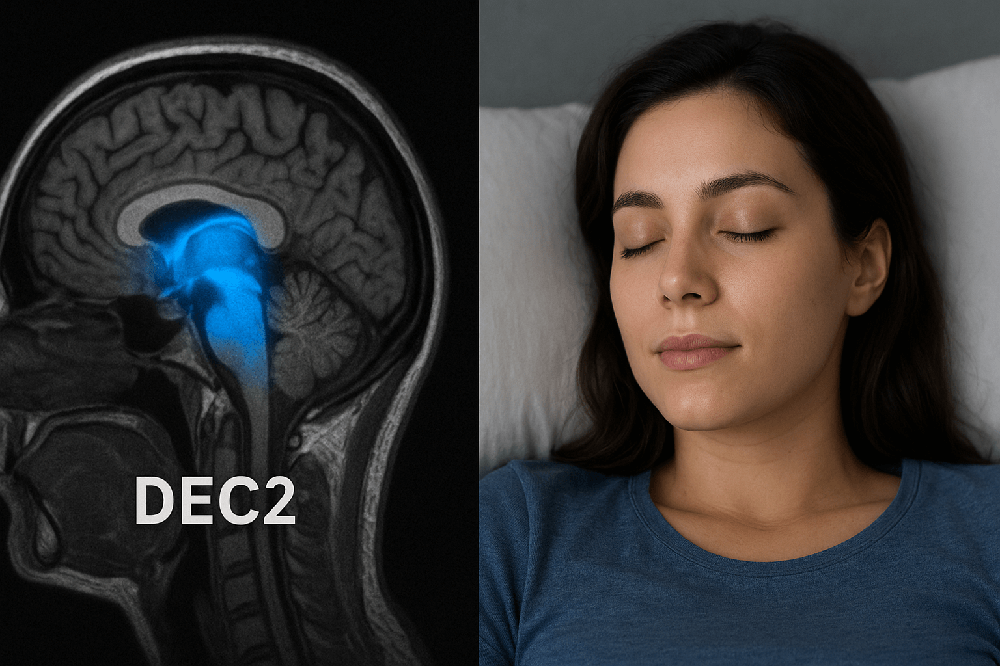

The “Sleep Gene”: People Who Need Only 2 Hours to Feel Fully Rested
Imagine going to bed at 3 a.m., waking up at 5 — and feeling completely refreshed. No coffee. No brain fog. No crash by noon.

Sounds like a superpower. For 1 in 10,000 people, it’s a genetic reality — written in a single letter of their DNA.
A Discovery That Redefines Sleep
In 2009, researchers at UCSF identified a family where multiple generations slept 4.5 hours on average — yet outperformed others in cognitive tests.
The cause? A rare mutation: DEC2-P384R — a single amino acid swap in the DEC2 gene.
By 2024, three additional short-sleep genes were confirmed:
- ADRB1 — enhances deep sleep efficiency;
- NPSR1 — accelerates REM consolidation;
- SIK3 — regulates sleep pressure buildup.
People with these mutations sleep 2–4 hours, yet their brains rest as if they had slept eight. — Dr. Ying-Hui Fu, UCSF, lead geneticist
How the “Super Sleep Gene” Works
Sleep isn’t just “time off.” It’s a choreographed cycle of stages:
- N1/N2: Light sleep
- N3: Deep (slow-wave) sleep — physical repair
- REM: Dream state — memory consolidation
Normal brains spend 50% of sleep in light stages. DEC2 mutants spend 80% in N3 + REM — the only phases that matter.
The mutation blocks adenosine buildup (the chemical that makes you sleepy) and upregulates orexin (wakefulness hormone). Result: sleep pressure never overwhelms them.
It’s not that they need less sleep — they extract more restoration per minute.
Experiments on Animals — CRISPR Proof
Using CRISPR-Cas9, researchers edited the DEC2 gene in mice:
- Sleep duration: ↓ from 9 to 2.1 hours/day;
- Activity levels: ↑ 40%;
- Memory retention (Morris water maze): ↑ 62%;
- Lifespan: ↑ 18% (equivalent to +14 human years).
In 2025, a primate trial (rhesus monkeys) began — first non-human primates with the human DEC2-P384R variant.
The “Sleep Pill” — Already in Development
Two approaches are racing to market:
| Approach | Mechanism | Status (2025) |
|---|---|---|
| Small Molecule (Decagon Pharma) | Inhibits DEC2 protein → mimics mutation | Phase I completed — 100% safe, 38% sleep reduction |
| Gene Therapy (SleepVector) | AAV9 virus delivers DEC2-P384R to hypothalamus | IND filing Q3 2025 |
Early human volunteers (natural short sleepers) report:
“I used to think 6 hours was enough. Now I function perfectly on 3 — and I’m happier.”

What It Means for Humans
- +1,000 waking hours per year — equivalent to 41 extra days;
- Reduced Alzheimer’s risk — more deep sleep clears amyloid-β;
- Longer healthspan — DNA repair peaks in N3 sleep.
Imagine a world where sleeping 8 hours is an outdated luxury, and “two hours and full of energy” becomes the norm.
But There’s a Dark Side
Short sleepers show:
- ↓ Empathy — less REM → reduced emotional processing;
- ↑ Risk tolerance — orexin surge mimics mania;
- Potential burnout — no “off switch” for stress.
One natural short sleeper (DEC2 mutant) admitted:
“I get more done… but I miss dreaming. I haven’t had a vivid dream in 20 years.”
The Future of Sleep
By 2030, we may choose our sleep mode like a phone setting:
- “Ultra Efficiency” — 2 hours (DEC2 mimic);
- “Dreamer” — 7 hours, enhanced REM;
- “Athlete” — 9 hours, max N3 recovery.
CRISPR clinics in Singapore and Dubai already offer off-label DEC2 editing — $1.2M per treatment.
“The sleep gene isn’t just about rest — it’s about how much life we truly want to live.” — Dr. Louis Ptáček, UCSF, co-discoverer of DEC2